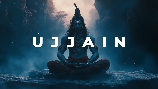
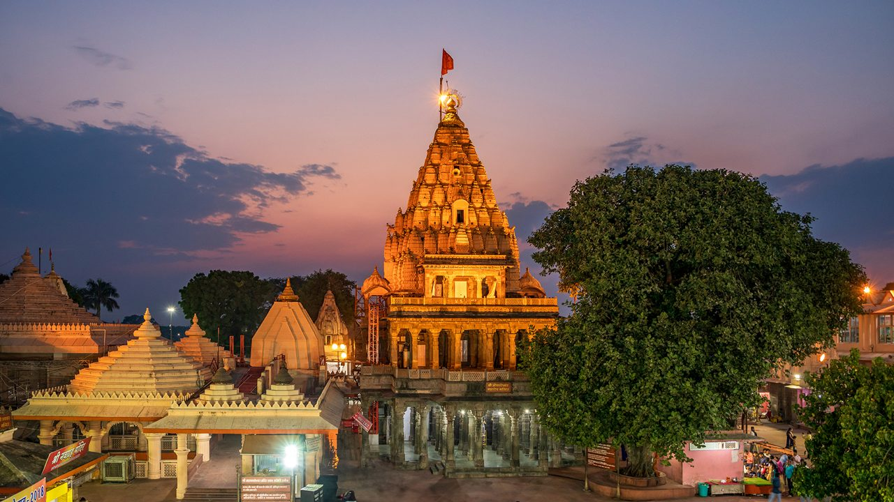
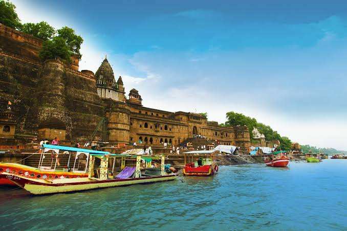
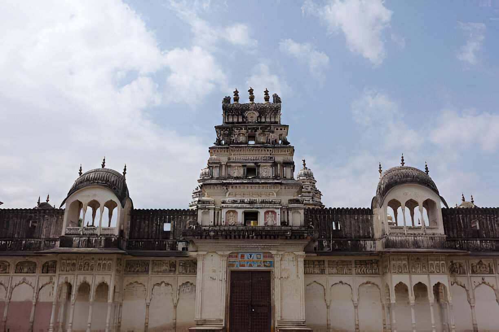
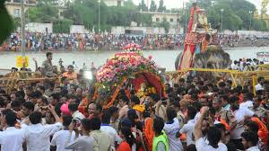

Ujjain, one of the most sacred cities in India, is an ancient treasure trove of history, religion, and culture. This article is based on my fifth chapter in the Sapthapuri series, which chronicles my travels to India’s seven holiest cities. My journey began in Mumbai and led me to Ujjain—a spontaneous trip that left me so captivated that I extended my stay to 10 days.
A Historical Glimpse of Ujjain
Ujjain's history is steeped in antiquity, making it one of the oldest cities in the world. Records suggest that Ujjain, along with Banaras (Varanasi), is ancient, dating back to at least 600 BCE. The city was known as Avantika, as mentioned in the Buddhist text Angutara Nikaya, and was the capital of one of the 16 Mahajanapadas in ancient India. Excavations have unearthed artifacts such as Northern Black Polished Ware (NBP) and Painted Grey Ware (PGW), which indicate its strong connection with North and Central India
Throughout history, Ujjain has been a hub of religion, literature, and trade. It features prominently in Hindu epics such as the Mahabharata and Ramayana, affirming its long-standing religious significance. Ujjain’s cultural relevance continued through the reigns of various empires, including the Mauryan, Shunga, and Gupta dynasties. The legendary Emperor Ashoka trained in Ujjain, and his son and daughter were born here. Later, the Marathas contributed significantly to the city's revival, rebuilding temples and religious sites that continue to stand today.
Religious Importance and the Temples of Ujjain
Among Ujjain’s sacred sites, the Kaal Bhairav Temple holds special significance. It is one of the most visited temples after the renowned Mahakaleshwar Temple. Devotees believe that when the priest offers alcohol to Lord Kaal Bhairav, the god miraculously accepts it, and the alcohol disappears. Despite the rain and large crowds, visiting this temple was an awe-inspiring experience.
Next, I visited the Mahakaleshwar Temple, the most iconic symbol of Ujjain. The temple is home to one of the 12 Jyotirlingas, but what makes it unique is its south-facing Shivling, a rare feature not found in the other Jyotirlingas. The term "Mahakal" is derived from "Maha," meaning great, and "Kaal," which means time or death. Mahakal, therefore, represents Lord Shiva in his form as the ruler who transcends time and death.
There is no clear evidence of how old the Mahakaleshwar Temple is, but it finds mention in the works of the poet Kalidasa. The temple as it stands today was reconstructed by Maratha General Ranoji Shinde in 1734. Its architecture follows the late-Nagara style, and it is a focal point for pilgrims from across India. I’ve visited this temple several times during my stay, each visit offering a profound sense of peace and connection.
Travelling with a local!
On my journey here, I was fortunate to meet Yash, a local host who introduced me to his family and offered a wonderful insight into the region's hospitality. Ujjain is known for its laid-back vibe, and people often joke that the locals here are the most relaxed in all of India. Yash and his family exemplified this sentiment, sharing delightful stories about life in Malwa and its unique way of working, where businesses close in the afternoon for a relaxed siesta, free of work pressure. His homestay on the ground floor offers a cozy atmosphere for families, with enough space for five people, including a fully equipped kitchen, making it an ideal spot for longer stays.
As we explored the town, Yash took me to the ISKCON Temple for the evening prayer—a truly magical experience. The Govinda restaurant next door, which serves delicious vegetarian food without onions or garlic, is highly recommended for its incredible flavors.
The next morning began with a visit to the famous 24 Khamba Mata Temple, followed by breakfast at Apna Sweets, a must-try place for any visitor to Ujjain. The poha here is unlike any I've tasted before—slightly sweet, yet spicy, with a burst of flavor from the pomegranate seeds. And of course, no breakfast would be complete without chai and jalebi.
Ujjain - the city of Prime Meridian!
One of the most fascinating aspects of Ujjain is its connection to time itself. Known as the city of Mahakaal, Ujjain has been historically considered a prime meridian in ancient times, as referenced in the Surya Siddhanta. The zero meridian concept is something I had only vaguely recalled from school, but standing here in Ujjain made it all come to life. The city was once regarded as the geographical zero point, where the north-south line (prime meridian) and the east-west line (Tropic of Cancer) intersect.
Greek scholars, including the famous mathematician and scientist Ptolemy, even recognized Ujjain as an important geographical reference point. It's a city where time feels like it either begins or ends—a fitting description for a place so intertwined with the concept of Mahakaal, the eternal time.
Our journey through Ujjain included a visit to Jantar Mantar, built by King Jai Singh in the 18th century to observe astronomical movements. The massive stone structures serve as ancient instruments that helped calculate celestial phenomena, such as the movements of planets and the timings of eclipses. Ujjain truly feels like a place where time has a deeper meaning, not just in history but in the way life is lived every day.
One of the highlights of my trip was a visit to the Kark Rajeshwar Temple, located at the zero point intersection of the prime meridian and the Tropic of Cancer. It's a small, lesser-known temple, yet it holds profound significance in understanding Ujjain's connection to time. After this, we ventured to another local gem for dinner—Shri Ganga, a restaurant known for its delicious sweets and cakes. Our meal began with a refreshing Raj Kachori, followed by a hearty platter of six puris and a fruit salad.
The next morning brought a moment of reflection as I visited the serene banks of the river in Ujjain, where I often sat to plan my day. I made my way to a small, ancient temple at the end of the ghat, where few people go but the atmosphere is filled with spirituality. As the priest performed yoga before the aarti, I felt a deep sense of peace.
Story of Kshipra River
The Shipra River, which starts from the Vindhyan mountain range, Kakri-Tekri hill, flows through Ujjain and plays a central role in its religious and cultural life. Visitors from across the country come to Ram Ghat, a prominent spot on the riverbanks, to experience the river’s serene beauty. The best times to visit are early in the morning, after sunrise, or in the evening, when the atmosphere around the river is at its most tranquil.
In the morning, Ram Ghat is alive with the sounds of temple bells and the chants of priests performing their morning aartis. The soft light of the early sun reflects off the flowing waters of the Shipra, creating a peaceful ambiance perfect for spiritual reflection. It’s a great time to take a walk along the riverbank, watching the rituals unfold and soaking in the spiritual energy that permeates the air.
Nearby is the Dharmaraj Chitra Gupta Temple, an ancient and revered site in Ujjain. This temple is particularly significant for those seeking relief from physical ailments. Devotees believe that lighting a lamp in the temple can help alleviate their suffering or lead them to salvation. The temple is a powerful reminder of the deep spiritual traditions of the city, where faith and healing are intertwined
Ujjain's Rich Cultural Legacy
Ujjain has long been a center of learning and literature, a tradition that dates back thousands of years. The city’s role as a hub of knowledge is closely linked to its historical and religious importance. Archaeological evidence shows that the region is one of the oldest parts of India, with links to the Painted Greyware culture, which connects Ujjain to the northern regions of the country, particularly Mathura. This connection highlights Ujjain’s role in the larger historical and cultural landscape of ancient India.
The city's historical significance is further enriched by its association with Lord Krishna and his friend Sudama, who are believed to have come here to study. Even today, Ujjain remains a center of learning, attracting people from all over who seek knowledge and spiritual growth.
Temples, Dargahs, and Gurudwaras: A Tapestry of Faiths
Ujjain is known for its numerous temples—so much so that one can find a temple almost every 100 meters. Yet, the city is also a testament to the harmony between different faiths. Along the banks of the Shipra River, in addition to temples, you will find a peaceful dargah, a place of worship for Sufi Muslims. One such dargah, dedicated to Maulana Mouj, is an example of the centuries-old Sufi traditions in the region. A short distance away, across the river, lies a Sikh Gurudwara, adding to the rich diversity of religious practices in the city. The coexistence of these sacred sites along the same riverbank is a beautiful representation of Ujjain's inclusiveness and spiritual harmony.
Shravan Maas and the Kavadiya Yatra
The month of Shravan is particularly special in Ujjain, especially for devotees of Lord Shiva. This is the time when the Kavadiya Yatra takes place, drawing pilgrims from all over the country. Shravan Maas is deeply significant in Hindu mythology, as it is believed to be the time when the ocean was churned, and many valuable elements emerged, including the pot of poison, which Lord Shiva consumed to save the world. The spirit of devotion during this month is palpable, with the city coming alive in celebration and worship.
Ujjain’s charm lies not only in its rich history but also in its ability to remain a vibrant center of faith, knowledge, and cultural exchange. Whether you are walking along the banks of the Shipra River, visiting ancient temples, or exploring the city's historical sites, Ujjain offers a journey through time that is both spiritually enriching and culturally profound. It is a place where the past and the present coexist in perfect harmony, and where visitors leave with a sense of peace and connection to something greater than themselves.
For those interested in learning more about Ujjain’s history and culture, or to follow my own travel experiences, be sure to subscribe to my journey. Stay tuned for more stories and insights as we continue to explore this fascinating city and beyond!